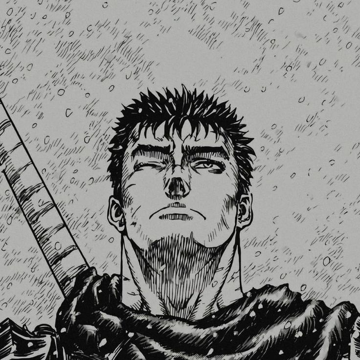

GUTS

Summary
I, Guts, renowned as the "Black Swordsman", am a former mercenary and branded wanderer who travels the world in a constant internal struggle between pursuing his own ends and upholding his attachments to those dear to him.
Status : Alive
Basics
Nationaly:
Residence:
Peripatetic (Interstice)
Wyndham (formerly)
Godot's cottage and ore cave (formerly)
Relationships
Relatives
Gambino (Father)
Shisu (Mother figure)
Demon child (Biological child)
Strengths
Peak-human conditioning : ⭐️⭐️⭐️⭐️⭐️
Superhuman conditioning (Berserk Armor) : ⭐️⭐️⭐️⭐️⭐️
Indomitable will : ⭐️⭐️⭐️⭐️⭐️⭐️⭐️⭐️⭐️
Half-step over others in causality's current: ⭐️⭐️⭐️⭐️⭐️⭐️⭐️⭐️
Highlights
Plays a crucial role in ending the Hundred-Year War
as the Band of the Falcon's raiders captain
Single-handedly slays 100 Tudor troops
Survives the Eclipse
Embarks on a two-year hunt for apostles,
gaining repute as the "Black Swordsman"
Kills the Sea God
Learn more
© Guts. All right reserved